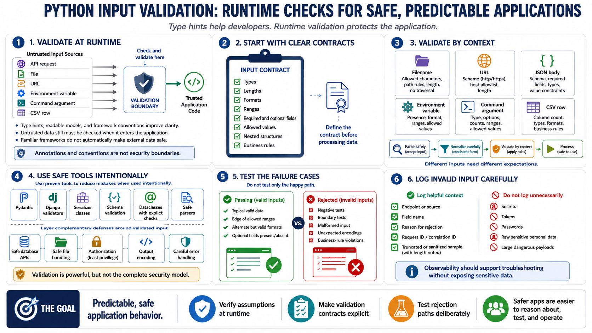

Course Summary and Key Takeaways
Connecting to LMS... Progress: in progress

Narration
Python input validation requires explicit runtime enforcement. Type hints, readable models, and framework conventions help developers understand code, but untrusted data still needs to be checked when it enters the application. Python will not automatically make external data safe just because the code is annotated or because a request came through a familiar framework.
Strong validation starts with clear contracts. Define expected types, lengths, formats, ranges, required and optional fields, allowed values, nested structures, and business rules before processing data. Normalize carefully, parse safely, and validate by context. A filename, URL, JSON body, environment variable, command argument, and CSV row all require different expectations.
Safe libraries and framework validators can reduce mistakes. Pydantic, Django validators, serializer classes, schema validation, dataclasses with explicit checks, and safe parsers can all help when used intentionally. They should be paired with safe database APIs, safe file handling, authorization, output encoding, and careful error handling. Validation is powerful, but it is not a complete security model by itself.
The goal is predictable, safe application behavior. Test failure cases, not only happy paths. Include negative tests, boundary tests, malformed input, unexpected encodings, and business-rule violations. Log invalid input carefully. When Python applications validate inputs consistently and verify assumptions at runtime, they become easier to reason about, easier to test, and safer to operate.